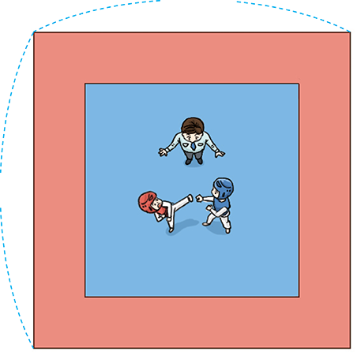

- 1
- 2
- 3
- 4
- 5
-
1 슬기와 지혜가 정육각형의 둘레를 구하고 있습니다. 안에 알맞은 수를 써넣으세요.
-
3 ㎝ 정육각형의 변의 길이를 모두 더하면 3 ＋＋3＋3＋3＋3＝ 18(㎝)니까 이 정육각형의 둘레는 18 ㎝야.3 -
3 ㎝ 정다각형의 둘레는
한 변의 길이×변의 수로 구할 수 있으니까 이 정육각형의 둘레는
3 ×＝ 18 (㎝)야.6
-
-
2 정다각형의 둘레를 구해 보세요.
-
-
7 ㎝ - 식
-
7×3＝21 또는
7＋7＋7＝21
- 답
-
㎝21
-
6 ㎝ - 식
-
6×4＝24 또는
6＋6＋6＋6＝24
- 답
-
㎝24
-
-
-
5 ㎝ - 식
-
5×5＝25 또는
5＋5＋5＋5＋5＝25
- 답
-
㎝25
-
4 ㎝ - 식
-
4×7＝28 또는 4＋4＋4＋4＋4＋4＋4＝28
- 답
-
㎝28
-
-
-
3 한 변의 길이가 12 m인 정사각형 모양의 태권도 경기장이 있습니다. 태권도 경기장의 둘레를 구해 보세요.
 12 m 12 m m48 -
4 두 정다각형의 둘레가 각각 30 ㎝일 때 한 변의 길이를 구해 보세요.
㎝6㎝5 -
5 둘레가 20 ㎝인 정사각형을 그려 보세요.
1 ㎝ 1 ㎝ 예